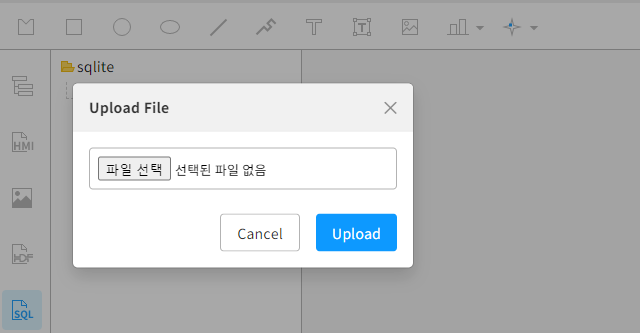

동적 그래픽 객체 만들기
본 문서는 그래픽 편집기를 통하여 동적으로 객체를 생성하고 생성된 객체를 활용하는 방법에 대하여 기술한다.
동적 객체 생성 방법
enuSpaceMeta는 그래픽 객체를 동적으로 생성하기 위한 스크립트 API 함수를 제공한다. 동적으로 객체를 생성하는 함수 API는 “3.1.1 그래픽 다루기 API” 항목을 참고하시기 바랍니다.
동적객체 생성 방법 및 절차
- Step1. 동적으로 생성할 데이터베이스 준비 (외부 데이터베이스 또는 enuSpaceMeta에서 제공하는 SQLite DB를 등록하여 활용 가능)
- Step2. 준비된 SQLite DB를 enuSpaceMeta 프로젝트에 등록
- Step3. 등록된 DB를 이용하여 데이터 취득 (Lua Script)
- Step4. 취득된 데이터를 활용하여 동적 그래픽 객체 생성 (Lua Script)
Step1. 데이터베이스 준비 (예시, 대한민국 해안선 위도와 경도자료)
대한민국의 해안선 자료 SQLite DB를 준비한다. 
Step2. 준비된 SQLite DB를 enuSpaceMeta 프로젝트에 등록
서브메뉴(sqlite)를 통하여 준비된 DB를 등록한다. 
Step3. 등록된 DB를 이용하여 데이터 취득 (Lua Script)
등록된 DB를 더블클릭하면, 해당 DB의 테이블 정보를 확인할 수 있다. 등록된 DB에서 나열된 테이블을 더블클릭하면, 해당 자료를 확인할 수 있다.
루아스크립트 이용하여 해당 테이블의 데이터를 취득하는 예시는 다음과 같다.
function _onload()
local data = SelectSQLite("sqlite/FLIP_DATABASE.db", "SELECT * FROM COAST")
end
취득한 데이터는 Json 방식으로 데이터를 전달 받는다. 전달된 데이터는 루아스크립트의 json.decode 함수를 통하여 각 항목별 데이터를 취득한다. 아래의 코드는 해안선 데이터를 취득하는 예시 코드이다.
function _onload()
-- COAST 설정 --------------------------------------------------------------
local data = SelectSQLite("sqlite/FLIP_DATABASE.db", "SELECT * FROM COAST")
local jsondcode = Json.decode(data)
local x, y
local tx, ty
local latitudeString, longitudeString
if (jsondcode.Result == "OK") then
for i=1, #jsondcode.Data do
map = jsondcode.Data[i].MAP
mapid = jsondcode.Data[i].NAME_ID
mapid = mapid:gsub("%s+", "")
_fill = jsondcode.Data[i].FILL
_fill_opacity = jsondcode.Data[i].FILL_OPACITY
_stroke = jsondcode.Data[i].STROKE
_stroke_opacity = jsondcode.Data[i].STROKE_OPACITY
_stroke_width = jsondcode.Data[i].STROKE_WIDTH
end
else -- jsondcode.Result == "FAIL"
PrintMessage(jsondcode.Msg)
end
end
Step4. 취득된 데이터를 활용하여 동적 그래픽 객체 생성 (Lua Script)
취득된 데이터를 루아스크립트를 이용하여 개별 데이터를 취득하였다면, 해당 정보를 이용하여 동적 객체를 생성한다. 아래의 코드와 같이 동적으로 객체를 생성하고, 생성된 객체의 속성값을 변경할 수 있다. 동적 생성시 각각의 파라미터 입력 정보는 “3.1.1 그래픽 다루기 API” 항목을 참고하시기 바랍니다.
local obj = CreatePolygon(mapid, combined, 0,0)
obj.fill = _fill
obj.fill_opacity = tonumber(_fill_opacity)
obj.stroke = _stroke
obj.stroke_opacity = tonumber(_stroke_opacity)
obj.stroke_width = tonumber(_stroke_width)
해안선 위도와 경도 정보를 이용하여 동적 객체를 생성하는 예시 코드이다. 본 코드에는 위도와 경도를 x, y로 변환 함수를 포함하고 있다.
function _onload()
local obj = GetNodeByID("COAST7")
if (obj == nil) then
-- COAST 설정 --------------------------------------------------------------
local data = SelectSQLite("sqlite/FLIP_DATABASE.db", "SELECT * FROM COAST")
local jsondcode = Json.decode(data)
local x, y
local tx, ty
local latitudeString, longitudeString
if (jsondcode.Result == "OK") then
for i=1, #jsondcode.Data do
map = jsondcode.Data[i].MAP
mapid = jsondcode.Data[i].NAME_ID
mapid = mapid:gsub("%s+", "")
_fill = jsondcode.Data[i].FILL
_fill_opacity = jsondcode.Data[i].FILL_OPACITY
_stroke = jsondcode.Data[i].STROKE
_stroke_opacity = jsondcode.Data[i].STROKE_OPACITY
_stroke_width = jsondcode.Data[i].STROKE_WIDTH
local cdata = {}
local count = 0
for str_data in map:gmatch("%S+") do
if (count == 0) then
latitudeString = str_data
count = count + 1
else
longitudeString = str_data
x, y = convertStringToCoordinates(latitudeString, longitudeString)
tx, ty = latlon2xy(x, y)
count = 0
table.insert(cdata, string.format("%f,%f", tx/2000-6800, -ty/2000+ 2800))
combined = table.concat(cdata, " ")
end
end
local obj = CreatePolygon(mapid, combined, 0,0)
obj.fill = _fill
obj.fill_opacity = tonumber(_fill_opacity)
obj.stroke = _stroke
obj.stroke_opacity = tonumber(_stroke_opacity)
obj.stroke_width = tonumber(_stroke_width)
end
else -- jsondcode.Result == "FAIL"
PrintMessage(jsondcode.Msg)
end
end
end
기타 위 함수를 동적시키기 위해서 추가된 루아 함수들 (위도, 경도 좌표 변환 함수)
function toRadians(degrees)
return degrees * (math.pi / 180)
end
function convertToDegrees(hours, minutes, seconds)
local degrees = math.abs(hours) + minutes/60 + seconds/3600
-- 시간 값의 부호를 적용하여 Latitude와 Longitude 값을 구분
if hours < 0 or minutes < 0 or seconds < 0 then
degrees = -degrees
end
return degrees
end
function convertStringToCoordinates(latitudeString, longitudeString)
-- 위도 변환
local latHours = tonumber(latitudeString:sub(1, 2))
local latMinutes = tonumber(latitudeString:sub(3, 4))
local latSeconds = tonumber(latitudeString:sub(5, 6))
local latitude = convertToDegrees(latHours, latMinutes, latSeconds)
-- 경도 변환
local lonHours = tonumber(longitudeString:sub(1, 3))
local lonMinutes = tonumber(longitudeString:sub(4, 5))
local lonSeconds = tonumber(longitudeString:sub(6, 7))
local longitude = convertToDegrees(lonHours, lonMinutes, lonSeconds)
return latitude, longitude
end
function latlon2xy(lat, lon)
local x = lon * 20037508.34 / 180
local y = math.log(math.tan((90 + lat) * math.pi / 360)) / (math.pi / 180)
y = y * 20037508.34 / 180
return x, y
end
function xy2latlon(x, y)
local lon = x * 180 / 20037508.34
local lat = math.atan(math.exp(y * math.pi / 20037508.34)) * 360 / math.pi - 90
return lat, lon
end
스크립트 실행후 화면에 출력 결과